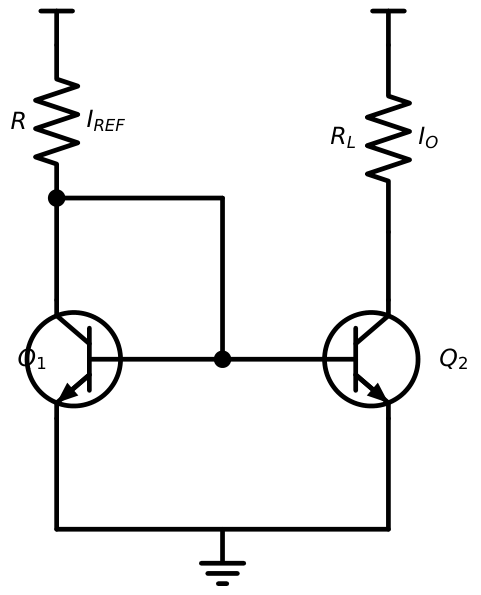
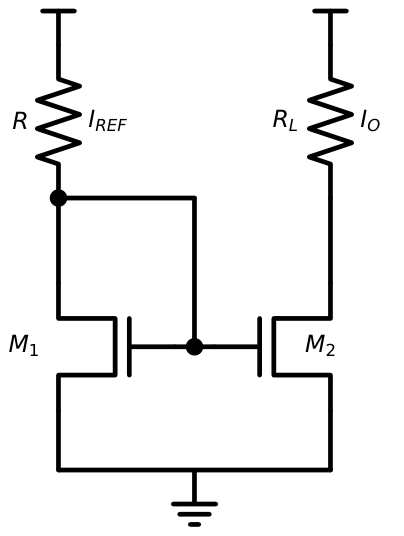
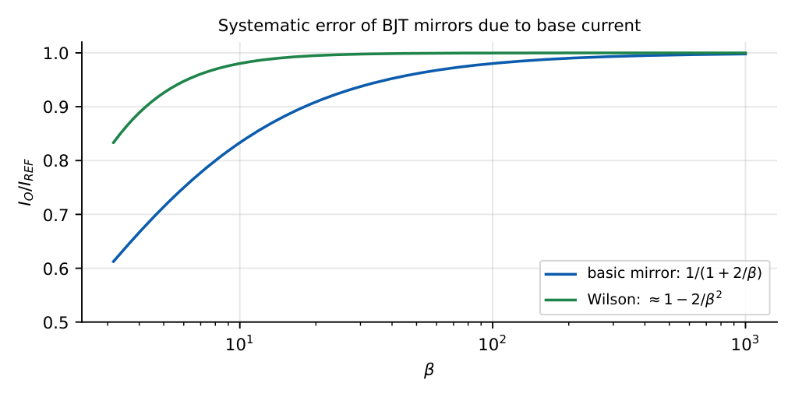
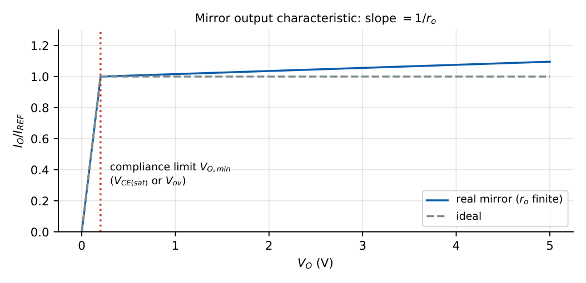
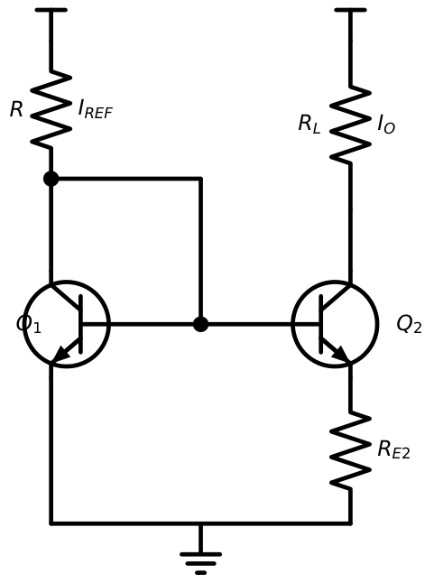
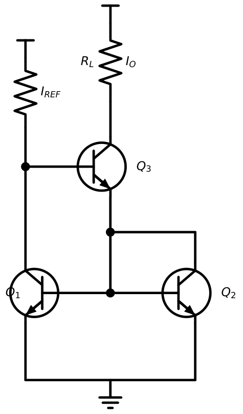
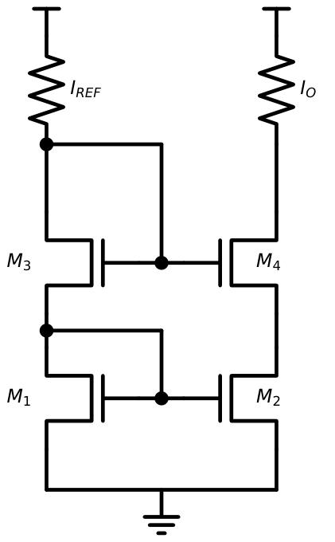
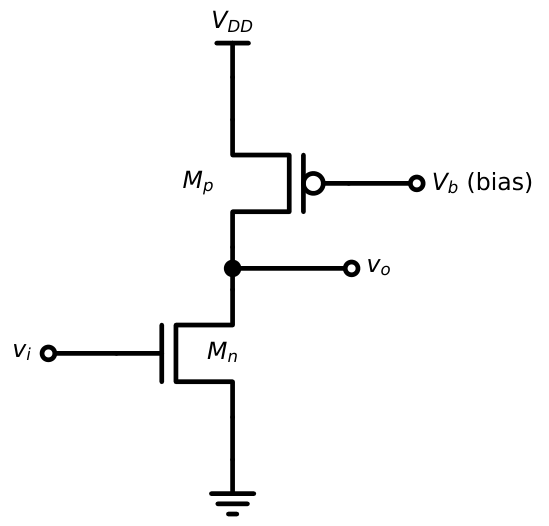

Current Mirrors
In this chapter
- 16.1 Concept of current copying
- 16.2 Basic BJT current mirror
- 16.3 MOS current mirror
- 16.4 Current-mirror accuracy
- 16.5 Output resistance
- 16.6 Compliance voltage
- 16.7 Widlar current source
- 16.8 Wilson current mirror
- 16.9 Cascode current mirror
- 16.10 Active loads
- 16.11 Current-source applications
- 16.12 GATE problems
16.1 Concept of current copying
A current mirror copies a reference current \(I_{REF}\) from one branch to another, using two matched transistors whose \(V_{BE}\) (or \(V_{GS}\)) are equal. Because IC-device currents are exponential (BJT) or quadratic (MOS) in the control voltage, equal control voltages imply proportional currents. Mirrors serve as bias sources (a DC current source with high small-signal resistance) and as active loads, replacing resistors that would take a large chip area.
16.2 Basic BJT current mirror

Since \(V_{BE1}=V_{BE2}\) and the devices match, \(I_{C1}=I_{C2}=I_C\). KCL at the input node: \[I_{REF}=I_{C1}+2I_B=I_C\left(1+\frac2\beta\right)\quad\Rightarrow\quad I_O=I_{C2}=\frac{I_{REF}}{1+2/\beta}.\]
\(I_{REF}=\dfrac{V_{CC}-V_{BE}}{R}\) \(I_O=\dfrac{I_{REF}}{1+2/\beta}\) Ratio \(m\) (emitter-area ratio \(A_2/A_1\)): \(I_O=\dfrac{m\,I_{REF}}{1+(1+m)/\beta}\)
\(V_{CC}=10\) V, \(R=9.3\) k\(\Omega\), \(\beta=100\): \(I_{REF}=(10-0.7)/9.3=1\) mA. \(I_O=1/(1+0.02)=0.980\) mA (error \(-2\%\)). With \(\beta=20\): \(I_O=0.909\) mA (error \(-9\%\)).
16.3 MOS current mirror

With \(I_{REF}=\tfrac12k_n'(W/L)_1(V_{GS}-V_{th})^2\) and the same \(V_{GS}\) for \(M_2\):
\(I_O=I_{REF}\dfrac{(W/L)_2}{(W/L)_1}\cdot\dfrac{1+\lambda V_{DS2}}{1+\lambda V_{DS1}}\) (\(V_{DS1}=V_{GS}\))
\((W/L)_1=10\), \((W/L)_2=40\), \(I_{REF}=100\ \mu\)A, \(\lambda=0\): \(I_O=400\ \mu\)A. With \(\lambda=0.02\), \(k_n'=100\ \mu\)A/V\({}^2\), \(V_{th}=0.5\) V: \(V_{ov}=0.447\) V, \(V_{GS}=0.947\) V; if \(V_{DS2}=2\) V, \(I_O=400\times\dfrac{1.04}{1.019}=408\ \mu\)A.
16.4 Current-mirror accuracy
Sources of error:
- Finite \(\beta\) (BJT): error \(\approx-2/\beta\).
- Finite output resistance (Early effect or \(\lambda\)): \(I_O\) depends on \(V_O\).
- Mismatch of \(I_S\) (BJT) or \(V_{th}\) and \(\beta\) (MOS): random offsets.
- Temperature gradients, layout.

16.5 Output resistance
Looking into the collector (or drain) of the output transistor, \(R_O=r_{o2}=V_A/I_O\) (BJT) or \(1/(\lambda I_O)\) (MOS). It determines how closely the mirror behaves as an ideal current source.
\(V_A=100\) V, \(I_O=1\) mA: \(r_o=100\) k\(\Omega\). A change of \(5\) V at the output changes the current by \(5/100=50\ \mu\)A (5%).
16.6 Compliance voltage
The minimum output voltage at which the mirror still works. Below it, \(Q_2\) (or \(M_2\)) leaves the active/saturation region and \(I_O\) collapses.

| Mirror | Minimum \(V_O\) |
|---|---|
| Basic BJT | \(V_{CE(sat)}\approx0.2\) V |
| Basic MOS | \(V_{ov}\) (typically \(0.2\)–\(0.5\) V) |
| Wilson (BJT) | \(V_{BE}+V_{CE(sat)}\approx0.9\) V |
| Simple cascode (MOS) | \(V_{th}+2V_{ov}\) |
16.7 Widlar current source
Adding \(R_{E2}\) in the emitter of \(Q_2\) gives a much smaller output current for a modest resistor.

KVL around the base loop: \(V_{BE1}=V_{BE2}+I_OR_{E2}\). With \(V_{BE}=V_T\ln(I/I_S)\): \[I_OR_{E2}=V_T\ln\frac{I_{REF}}{I_O}.\] Output resistance: \(R_O=r_{o2}\left[1+\dfrac{g_{m2}R_{E2}}{1+(R_{E2}+r_x)/r_\pi}\right]\approx r_{o2}(1+g_mR_{E2})\).
Design \(I_O=10\ \mu\)A from \(I_{REF}=1\) mA (\(V_T=26\) mV): \(R_{E2}=\dfrac{0.026\ln100}{10\ \mu\mathrm A}=\dfrac{0.1197}{10\times10^{-6}}=12\) k\(\Omega\). A plain mirror would need a \(930\) k\(\Omega\) resistor for the same current.
16.8 Wilson current mirror

Negative feedback makes the mirror much more accurate and gives a high output resistance:
\(I_O=I_{REF}\left(1-\dfrac{2}{\beta^2+2\beta+2}\right)\approx I_{REF}\left(1-\dfrac2{\beta^2}\right)\) \(R_O\approx\dfrac{\beta r_o}{2}\)
\(\beta=100\), \(r_o=100\) k\(\Omega\): error \(=2/10202=0.02\%\); \(R_O\approx5\) M\(\Omega\) (50\(\times\) the basic mirror).
16.9 Cascode current mirror

Stacking a second transistor in each branch raises the output resistance to \[R_O\approx g_{m4}r_{o4}r_{o2}\quad(\text{MOS}),\qquad R_O\approx\beta r_o/2\ \text{or}\ \beta r_o\ (\text{BJT cascode}).\]
\(g_m=2\) mS, \(r_o=50\) k\(\Omega\): \(R_O=2\,\mathrm m\times(50\,\mathrm k)^2=5\) M\(\Omega\) vs. \(50\) k\(\Omega\) for the basic mirror: 100 times better. The price: minimum \(V_O\) rises to \(V_{th}+2V_{ov}\) (about \(0.9\) V for \(V_{ov}=0.2\) V).
16.10 Active loads
A current source (mirror) used as the load of an amplifier stage gives a huge small-signal load resistance (\(r_o\)) with a small DC voltage drop.

\(A_v=-g_{mn}(r_{on}\|r_{op})\); if \(r_{on}=r_{op}=r_o\): \(A_v=-\dfrac{g_mr_o}{2}=-\dfrac{V_A}{V_{ov}}\) (roughly)
For a resistor load \(A_v=-g_mR_D\) with \(R_D\ll r_o\) due to the DC-drop limit.
\(g_{mn}=2\) mS, \(r_{on}=r_{op}=50\) k\(\Omega\): \(A_v=-2\,\mathrm m\times25\,\mathrm k=-50\). To get the same gain with a resistor one would need \(R_D=25\) k\(\Omega\), dropping \(25\) V at \(1\) mA: impossible.
16.11 Current-source applications
- Bias: many identical branches biased from one reference (multiple outputs mirror).
- Active load: high-gain amplifier stages, differential pairs (Chapter 17).
- Level shifting: transferring signal current between supply levels.
- Current steering in DACs and charge pumps.
16.12 GATE problems
Q1. Identical BJTs (\(\beta=100\)) form a mirror with \(I_{REF}=1\) mA. \(I_O\) (mA) is closest to (A) 1.02 (B) 0.98 (C) 0.90 (D) 1.
Q2. An NMOS mirror has \((W/L)_1:(W/L)_2=1:5\), \(\lambda=0\), \(I_{REF}=20\ \mu\)A. \(I_O=\) \(\mu\)A.
Q3. In a Widlar source \(I_{REF}=1\) mA, \(I_O=0.1\) mA, \(V_T=26\) mV. \(R_{E2}\) is \(\Omega\).
Q4. \(V_A=50\) V, \(I_C=0.5\) mA. The output resistance of the basic mirror is k\(\Omega\).
Q5. The output resistance of an MOS cascode mirror is approximately (A) \(r_o\) (B) \(g_mr_o^2\) (C) \(r_o/g_m\) (D) \(1/g_m\).
Q6. A CS amplifier has an ideal current-source load and \(g_m=1\) mS, \(r_o=100\) k\(\Omega\). \(|A_v|=\) .
Answers: Q1: (B) \(=0.98\). Q2: 100 \(\mu\)A. Q3: \(0.026\ln10/0.1\,\mathrm{mA}=599\ \Omega\). Q4: \(50/0.5=100\) k\(\Omega\). Q5: (B). Q6: \(g_mr_o=100\).
- Compute \(I_O\) for a BJT mirror with \(\beta=50\), \(I_{REF}=2\) mA. [1.92 mA]
- Design a Widlar source for \(I_O=50\ \mu\)A from \(I_{REF}=0.5\) mA. [\(R_E=0.026\ln10/50\,\mu=1.2\) k\(\Omega\)]
- MOS mirror with \(\lambda=0.05\): \(V_{DS1}=1\) V, \(V_{DS2}=5\) V. Ratio \(I_O/I_{REF}\)? [\(1.25/1.05=1.19\)]
- Why does a Wilson mirror need three transistors? [Feedback: \(Q_3\) compensates the base-current error]